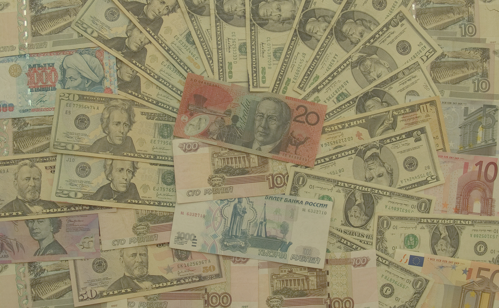
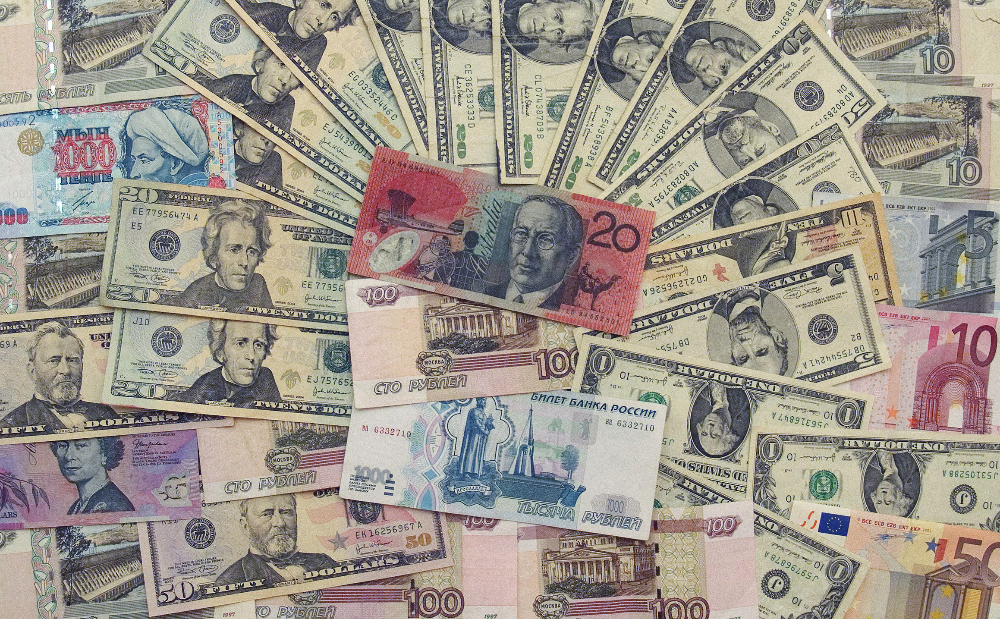
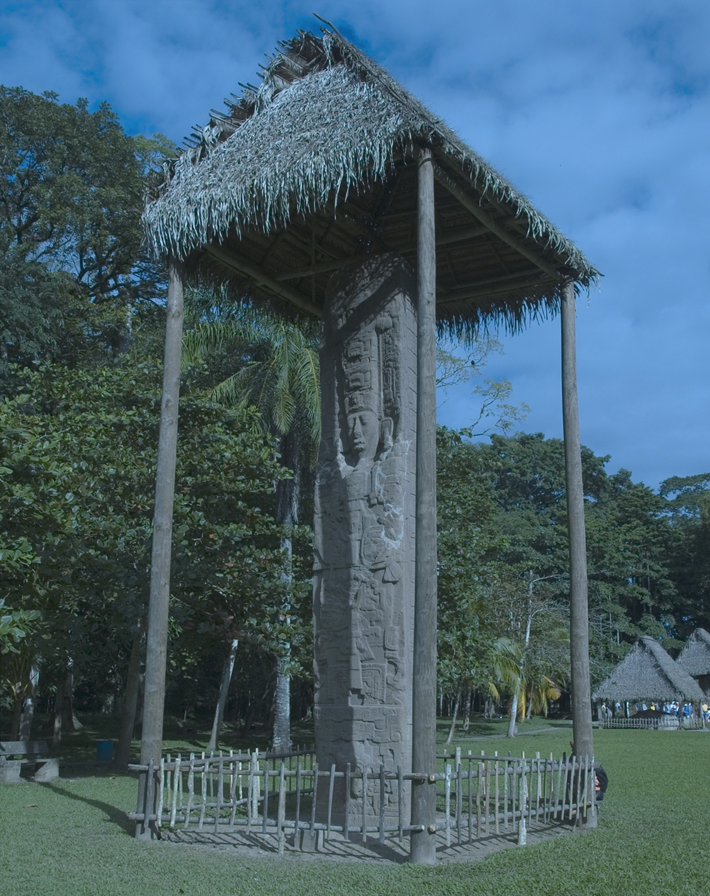
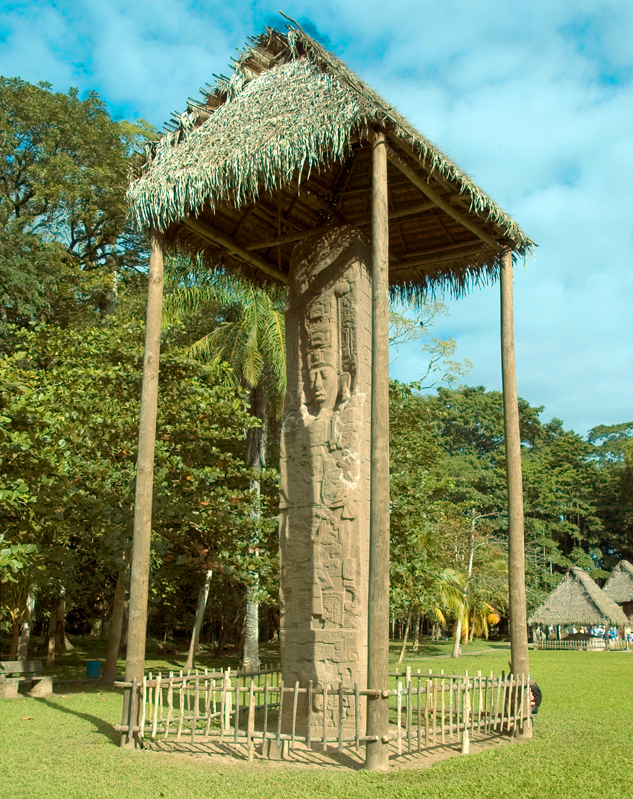
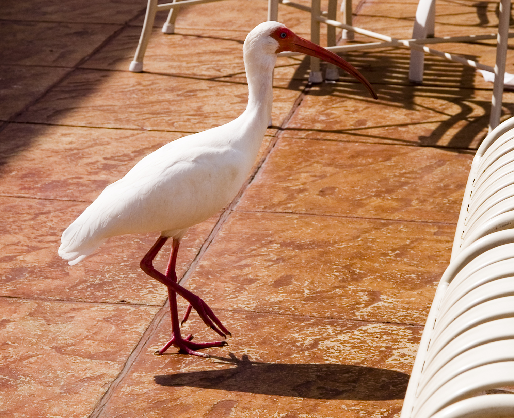
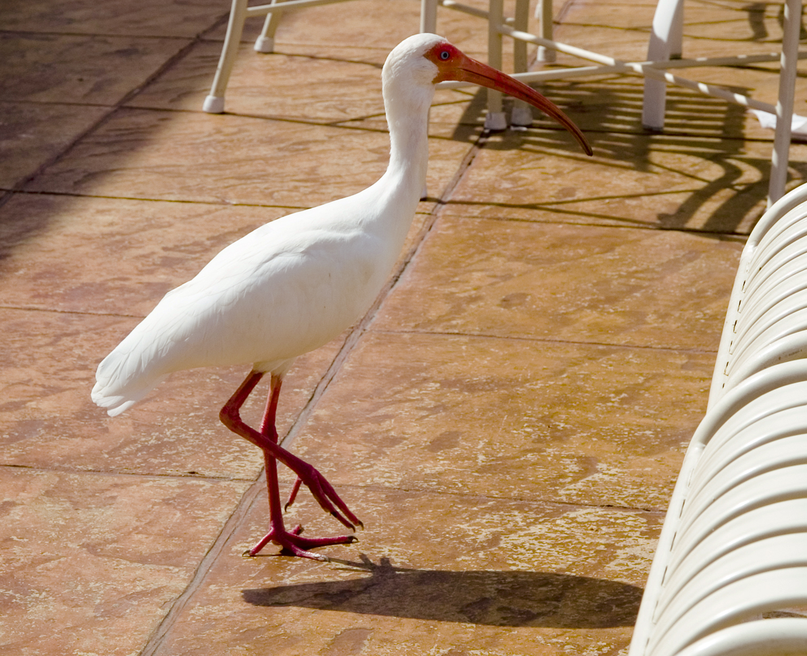
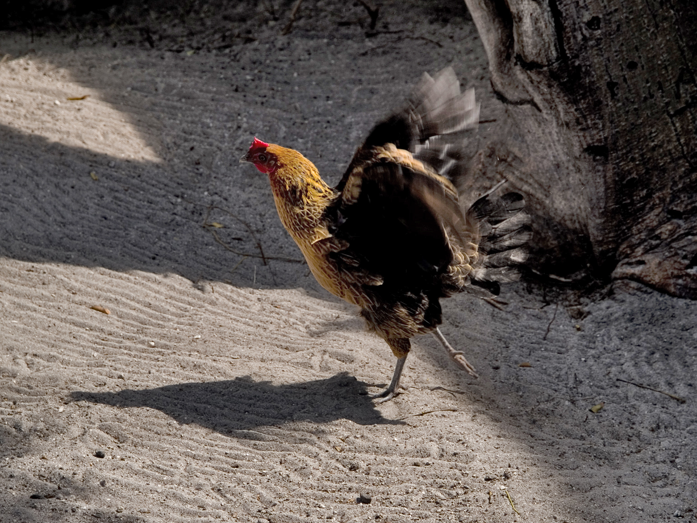

The Money - Automatic Correction


I transformed this image using the Auto Color and Brighness/Contrast commands. The Auto Color command automatically
balanced out the brightness and contrast of the image by making the shadows darker and making the highlights brighter. I increased the contrast further with the Brightness/Contrast command, but this left the highlights too bright. Luckily, the highlights could be darkened using the Brighness slider on the same command.
The Monument - Levels


I initially corrected this image with the Auto Tone command. Again, the automatic command balanced out the shadows and highlights to a degree but did not result in a finished image. Many of the colors were still out of balance. I used the Levels tool to adjust the highlights, shadows, and midtones of each color channel (there are three: red, green, and blue). Finally, I changed the settings on the RGB composite channel to darken the shadows and raise the gamma (which brightened the midtones) across the whole image. The Levels tool allows you do adjust the shadows, highlights, and midtones of an image with greater precision than any of the automatic adjustments.
The Bird - Curves


For this image, which began with way too much contrast. I used the Curves tool to adjust the light and dark areas of the image. The Curves tool consists of a histogram with a line running through it. It includes an eye dropper tool which, when used to click on a part of the image, creates a point at that color's location on the histogram. The point can then be manipulated with the mouse cursor to warp the line, thus shifting the brightness of the selected color and "nearby" colors. I used this tool to lighten the bird's shadow and darken the bright whites on the bird and the furniture. I also used the Curves tool specifically in the Red channel to decrease the brightness of all reds in the image. The Curves command allows you to adjust the highlights, shadows, and midtones of an image with even greater precision than the Levels tool. Finally, I used the Hue/Saturation command to make the oranges in the image more yellow, thus providing more visual disparity between the beak and the clay tile.
The Rooster - Shadow/Highlight


This image clearly started out with enough shadow to obscure the subject significantly. I therefore used the Shadow/Highlight tool to both decrease the darkness of she shadows and the image and slightly increase the brightness of the highlights. I also increased the radius of both the shadows and the highlights in order to smoothen the transition from one to the other. I used the Tonal Width setting to reduce the range of brightness considered to be "Shadows" and increase the range of brightness considered to be "Highlights," thus further isolating the darkest shadows of the image. This allowed me to increase their amount (brightness) even further without increasing the brightness of the rest of the image. Finally, I decreased the Color Correction amount in order to bring the reds on the chicken's head more in line with the rest of the picture.